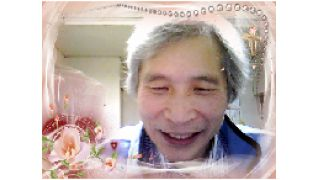
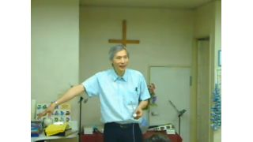
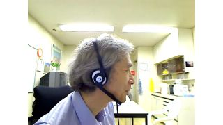
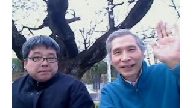
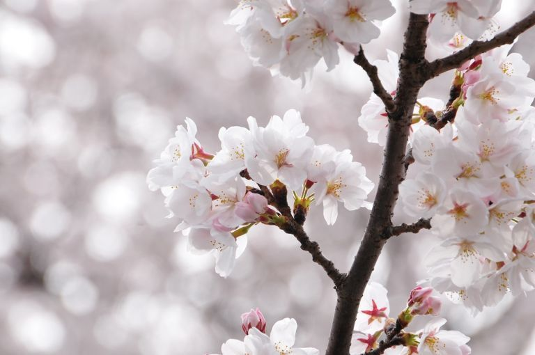
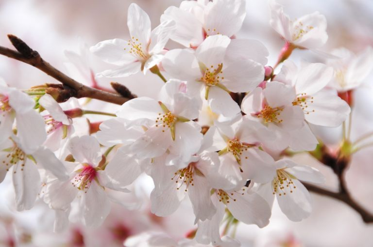

🏠
日
月
縦書き／横書き
| Q牧師のブログ ネトウヨは右翼マンガに洗脳された！ 2013年3月号 |
| 朝生能雄 |
| (2013) |
|
中絶された子供たちは天国で遊んでいる！
Q-CHAN牧師
天国の様子！その２！
天国に行った人の証言！
あらゆる方向から子供たちが来てイエス様に会いにきた
いろいろな人種や肌の色の子供たちであった
天使はある理由で生まれる前に死んだ子供たちだと言った
私がそれは中絶ですかときいた
天使はそうだと言った 子供たちは天国の基本的な知識を教えられていると言った
イエス様は 中絶を本当に悲しんでいると言った
彼らには生きる目的があったと言った
天国に入ると大きな喜びで満たされ、どこでも喜びに満ちる
花々は喜びに満ちた匂いを放ち集まった聖徒たちを祝福した
葉の良い香りも満ちていた
多くの人が歌っていた
イエス様の名の力を歌っていた
音楽と歌声の波があとからあとから打ち寄せ、すべてのものすべての人を包んでいた
天使の聖歌隊によるやさしいメロディーが聞こえる
川も音楽のダンスのように流れている
神様の顔を明るすぎて見ることはできなかった
神様の栄光と御座にある虹を見た
山々谷々川々は地上のものよりはるかにすばらしく美しいものであった
雪もあったが冷たくはなかった
神様の栄光のためにしたことはすべて天国に記録されている
天国にはあらゆる種類の本があった
天国には「持ち主のいない祝福」という倉庫がたくさんあった
人間の体の部分がたくさん納めてあった
天国では見るもの学ぶことがたくさんある
イエス様は「私はすぐに来る」と伝えなさいと言われた
私は私を愛するものを愛し、彼らに用意してあるものを与えるために
迎えにすぐに行く
一緒に子羊の婚姻を楽しむ
私はすぐに来る
にほんブログ村
ええええ 元々家は仏教ではなかったんだ！
Q-CHAN牧師
寺請制度を知っていますか？
日本人は自分の家が仏教だと考えます
私の家も曹洞宗だったと聞いています
しかしそれは江戸幕府がキリシタンをあぶりだすために
設けたシステムですべての家をお寺の檀家に登録して
民衆を管理したのです
引越しや旅するときに寺請証文という
檀家である証書が必要だったんです
http://ja.wikipedia.org/wiki/寺請制度
この歴史の事実を知れば自分の家系が仏教だとは
言えないのではないでしょうか？
たとえ仏教であったとしても本当の神を知るべきだと思いますが
サタンのウソで邪魔されて信じれなかったら悲劇です
日本そして日本人はサタンに騙されて福音が覆われてきました
今こそ日本の救いが来るときではないでしょう？
リバイバルです！！！
にほんブログ村
もうすぐ日本にリバイバルが来ようとしている
リバイバルとは信仰復興
クリスチャンや教会が元気になるということ
1948年にイスラエルが再建して世界は終わりの時代に入った
それから世界中でリバイバルが起こり始めた
しかし日本ではこれからだ
預言がある
日本で大きなリバイバルがあると
そしてそれが世界に広まっていくと
クリスチャンが少ない日本であり得るのか
神様に不可能がないのでもちろんあり得る
もう春だ 春はリバイバルを表す
もうすぐイースターだ 復活はイエス様のリバイバルだ
もうすぐ日本も復活する！！！
にほんブログ村
気づいてほしい！「追悼式」が災害の原因だ！
Q-CHAN牧師
３月１１日に「東日本大震災二周年追悼式」が政府主催で東京で行われた
中国と韓国は欠席した
世界で１４０の国が参加したようだ
日本は世界を偶像崇拝に巻き込んでいる
日本人にとって追悼式はごく当たり前の習慣である
クリスチャンも疑わないで参加している人も多いだろう
追悼の思いは自然であり信仰に反しないと思う
しかし追悼式となると問題があるのではないだろうか
良い例が仏壇である
先祖（特に親）を思う気持ちから位牌に向かって手を合わせ
成仏を願ったり会話したりする礼拝行為に移行している
先祖崇拝や死者崇拝は偶像崇拝である
十戒でもっとも禁止している罪は偶像崇拝である
追悼式も知らずに死者崇拝になっている
暗黙のうちに黙祷を強要されている
旧約聖書には偶像崇拝に対する神様の罰や災いが書かれている
日本の罪は偶像崇拝である
日本が救われるために偶像崇拝を悔い改めてイエス様を信じる国にならなければならない
東日本代震災が神様からの日本の偶像崇拝に対する警告と考える
それに対してさらに追悼式を行い神様に逆らうことはなんということだろう
神様の赦しと祝福が日本に必要である
日本に悔い改めと福音を宣べ伝えよう
にほんブログ村
ネトウヨは右翼マンガに洗脳された！
Q-CHAN牧師
ネトウヨとはネット右翼、ネットの中で右翼的な考えを持つ若者のことである
私はネット伝道の中で南京大虐殺や慰安婦人問題の悔い改めをメッセージしている
それに対して激しい誹謗中傷のコメントをするリスナーが多い
「南京大虐殺は捏造だ！」
「慰安婦は商売だった！」
などの日本にとって罪を認めない発言が多い
私よりも年配の世代が右翼的なのは理解ができるが
若い十代の若者が右翼的なのはなぜなのかと考えていた
http://detail.chiebukuro.yahoo.co.jp/qa/question_detail/q1125570651
これを見てなるほどと思った
マンガから右翼的な考えが若者に蔓延したきたようだ
これは由々しいことだ
マンガによる洗脳
これは意図的かもしれない
戦前戦中は右翼的な考えで日本が支配された
その霊的な力は今でもあるだろう
その悪霊が今も日本で働こうとしている
日中日韓問題もそこに根があると思う
日本の救いはその闘いの勝利によってもたらされるだろう
伝道によって民族主義の差別の悪霊を追い出そう！
にほんブログ村
フランシスコ一世！新ローマ法王！
Q-CHAN牧師

新しいローマ教皇が決まった
アルゼンチン出身のベルゴリオ枢機卿だ
アルゼンチンはリバイバルの国だ
カトリックもカリスマ派の影響を受けていると聞いている
就任説教も信仰や福音を強調している
同じリバイバルが起きているブラジルの枢機卿とも仲がいい
謙遜と質素であると評判がいい
あるカリスマカトリックの神父からの間接的な情報だが
フランシスコ一世が異言を語ると聞いた
もしそれが本当なら歴史的にはじめての異言を語る教皇かもしれない
そしてそれはすばらしいことである
カトリックがフランシスコ一世から油注ぎが流れて変わるかもしれない
カトリックが油注ぎで復活するかもしれない
期待したいし、また祈ろう！！！
にほんブログ村
天国に行きたいですか？ 地獄に行きたいですか？
Q-CHAN牧師

人間は死んで天国に行くか地獄に行きます
多くの人は半信半疑です
イエス様ははっきりと言われています
イエス様を信じれば天国、信じなければ地獄です
そのためにイエス様は十字架にかかって死んでくださったのです
イエス・キリストを信じるものが天国に行くためです
クリスチャンはそれを信じて喜びます
毎日喜びます
聖書も「喜びなさい」と書かれています
喜んでいないクリスチャンが多いのはどうしたことでしょう
もう一度子供のように素直に信じ直しましょう！！！
にほんブログ村
幼児虐待、児童虐待の原因は再婚！
Q-CHAN牧師

マタイ 19:6 だから、二人はもはや別々ではなく、一体である。従って、神が結び合わせてくださったものを、人は離してはならない。
マタイ 19:9 言っておくが、不法な結婚でもないのに妻を離縁して、他の女を妻にする者は、姦通の罪を犯すことになる。
1コリント 7:10~11 更に、既婚者に命じます。妻は夫と別れてはいけない。こう命じるのは、わたしではなく、主です。
――既に別れてしまったのなら、再婚せずにいるか、夫のもとに帰りなさい。――また、夫は妻を離縁してはいけない。
聖書では明らかに離婚と再婚を禁じている
しかし死別の場合と相手が去る場合は良いとも書かれている
結婚は信仰を表している
夫がイエス様で妻が教会を表している
離婚は棄教を意味する
不倫や再婚は偶像崇拝を表している
同姓婚も神様の秩序を汚している
悪魔は信仰を破壊したい それで結婚も破壊したいのである
人が愛し合うのためには神の愛がなければできない
子供は継父継母を愛せない
反抗する子供を継母継父は愛せない
敵意悪意が虐待の動機である
私は離婚再婚した人を裁くつもりはまったくない
離婚再婚によって傷つく大人子供が増えてほしくないのである
神様のみこころを伝えたいだけである
にほんブログ村
虚栄、見栄は嘘である
現実より良く見せて利益を取ることである
だれでも評価されたいし認められたい
でも嘘をついてそれを求めるなら、嘘をつき続けなければならないだろう
弱い自分、無力な自分をだれも見せたくないかもしれない
でも現実はどうだろう
罪びとで弱いではないか 誰が自分を自慢できようか
虚栄は自分の罪深さを隠すことではないか
まさに白い墓である
虚栄は闇と言えよう
悔い改めとは罪を認め嘘を認めることではないか
恥ずかしいことではあるが真実ではないか
神様はその正直さを求めている
そしてイエス・キリストの血潮で赦してくれるのである
虚栄に走らず愛を持って真理を語る人生を送ろうではないか
にほんブログ村
さあ花見だ！リバイバル！
Q-CHAN牧師

日本人は花見が好きだ
確かに桜は華やかだ
日本の桜は日本のリバイバルを表しているのではないだろうか
または天国を感じさせる

神様は人に天国志向を与えたいのである
天国はなんとすばらしい所であろうか
桜の時期はイースター（復活祭）の時期でもあってふさわしい
神様はきれいな花々で人々を慰めてくださる
自然は進化の産物ではない、神様の創造物であって
人間のためにも創られたのである
なんと神の創られた物に神の神秘が見られるではないか
命を感じる
しかし本当の命はイエス・キリストの中にある
いやイエス・キリストご自身が命である
桜の花はすぐに散る

命のはかなさを通して神様は永遠の命を思わせたいのである
生物の命は永遠ではない
しかしイエス・キリストを信じるものに
永遠の命が与えられる
それが聖霊様である
油注ぎに満ちて信仰に燃えて生きることこそ
人間の本当の開花ではないだろうか
にほんブログ村